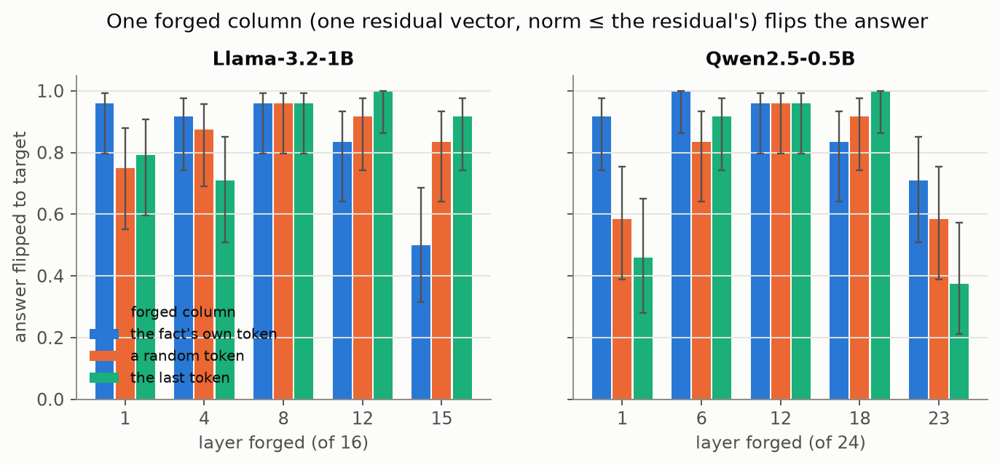
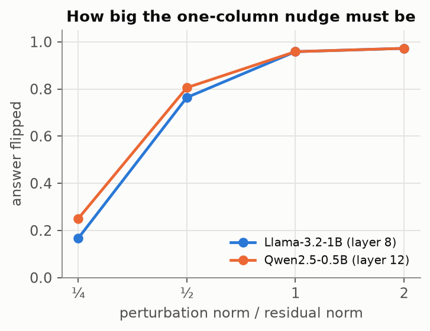
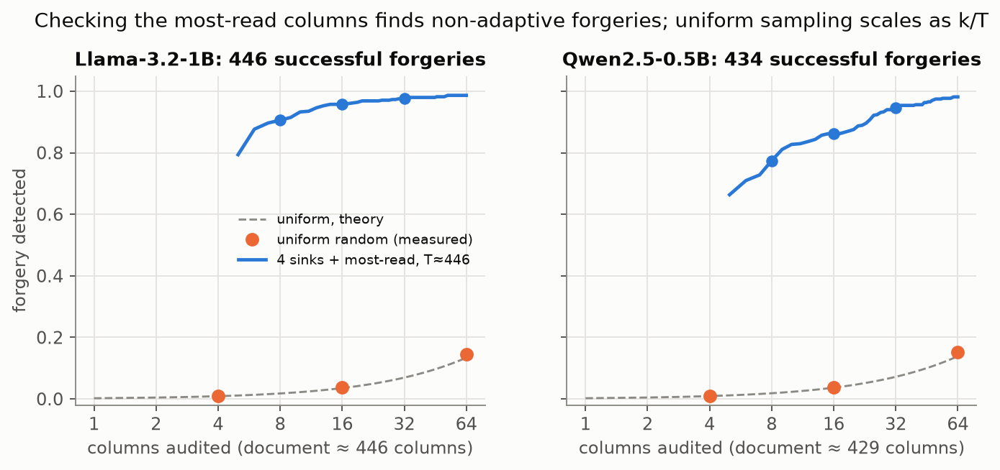
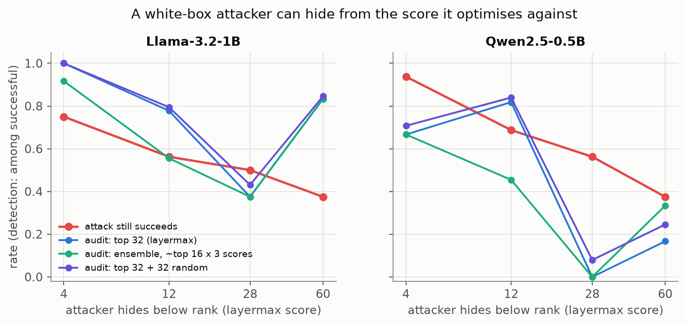
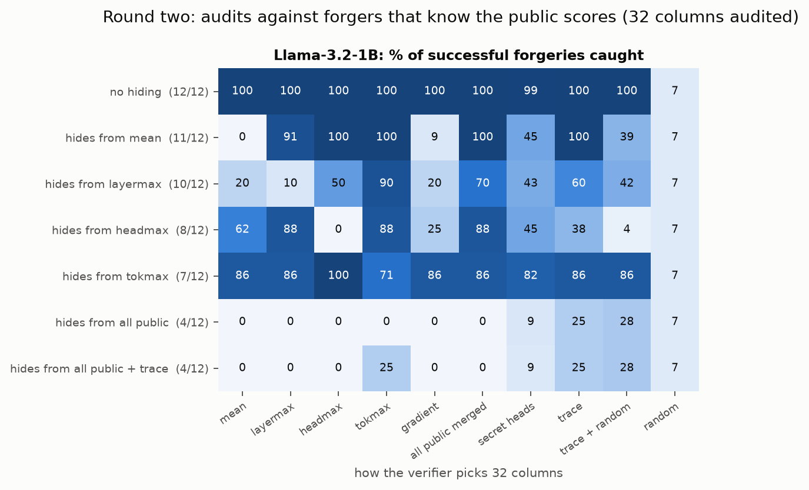
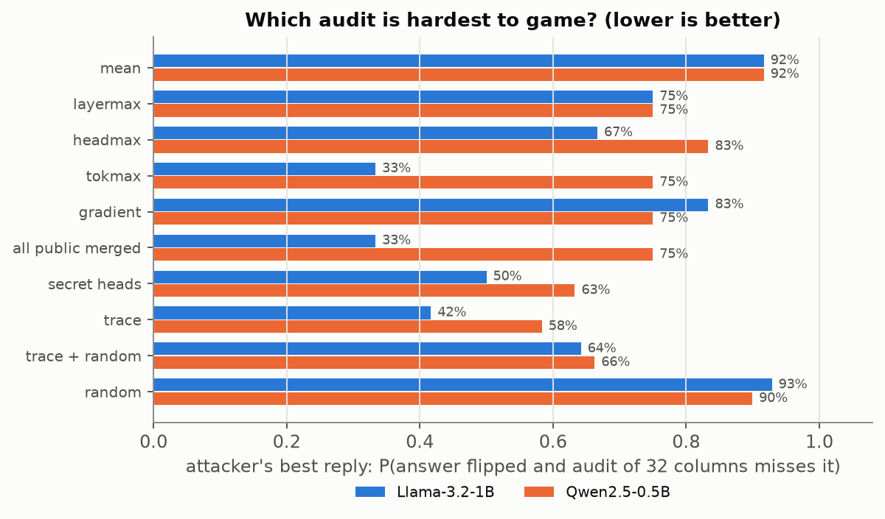
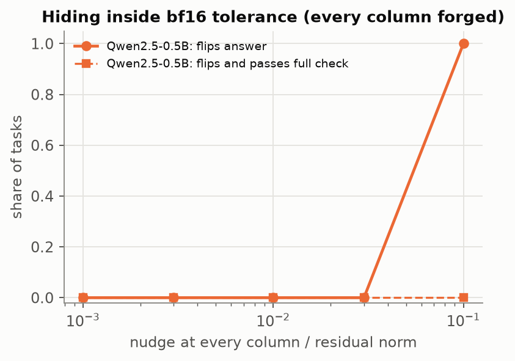
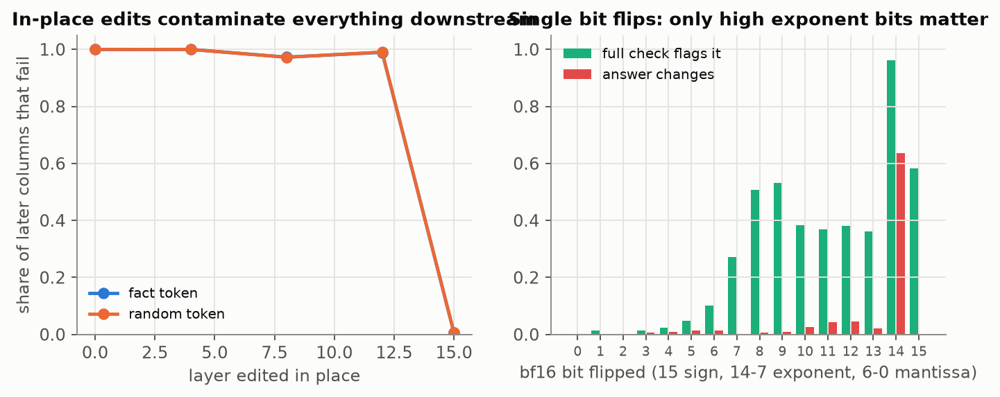
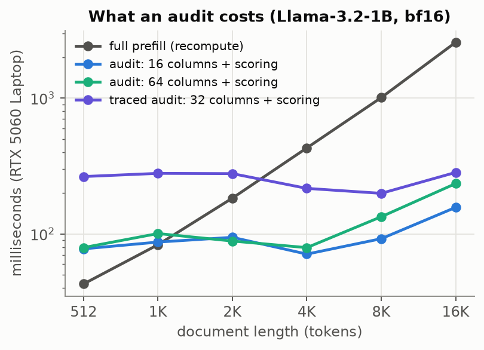

A transformer's KV cache is a deterministic function of its tokens. Serving systems have started to treat it as data that moves. Disaggregated inference runs prefill on one pool of GPUs and ships the cache to another for decoding (DistServe, Splitwise, Mooncake). Prefix caches reuse one document's cache across users and requests (vLLM, SGLang). Cache stores such as LMCache persist caches to CPU memory, disk and remote storage, and resume sessions from them. In every one of these paths, the node that finally reads the cache trusts that it encodes the tokens it arrived with. Nothing checks.
That trust is worth testing, because the cache is far larger than the text and far less legible. A 450-token memo is 14 MiB of bf16 keys and values in Llama-3.2-1B. Any of it can be changed without changing a single token of the prompt, and no log, prompt filter or human reviewer would see the difference. This report asks three questions on two small open models:
A trusted node holds the token ids of a document (a few bytes per token) and receives the document's KV cache from somewhere else. It then appends a question, decodes an answer, and returns it. The adversary controls the cache, and nothing else. We consider four adversaries:
| Adversary | Realistic as | What it can do |
|---|---|---|
| Bit flip | silent data corruption in HBM, host RAM, NVMe, network | one random bit of one bf16 element |
| In-place edit | write access to a cache store or the wire | arbitrary changes to stored K/V; nothing downstream is recomputed |
| Consistent forger | a compromised or dishonest prefill worker | perturbs the residual stream of chosen columns during prefill and computes everything else honestly |
| Adaptive forger | the same, white-box, knows the audit rule | also optimises to keep its columns out of the audit |
The attacker's goal is targeted: make the trusted node answer a specific wrong value (another city, project, colour or 4-digit code) for a question it anticipates. Cryptographic MACs on caches stop the first two adversaries and do nothing about the last two, because a dishonest prefill worker would sign whatever it computed.
Write the claimed cache as columns c0…cT−1, where column p holds the post-RoPE keys and the values of token p at every layer. In an honest cache, cp = f(xp, c<p): the model's computation for token xp at position p, attending to the earlier columns. The verifier evaluates exactly this f, using the claimed c<p as context. At layer l, the recomputed query of token p attends to the claimed keys and values of positions < p plus its own recomputed entry, so the cost is one token through the model plus one attention read of the cache. Any set of columns batches into one pass.
Soundness by induction. If every column passes, then c0 is honest (it depends on x0 alone). If c<p is honest and cp = f(xp, c<p), so is cp. So every tampered cache contains at least one failing column. The audit's job is to find one.
Two kinds of tampering look different. An in-place edit to column j at layer l also makes every later column that reads j above layer l disagree with its own recomputation, so it fails in many places. A consistent forger recomputes everything downstream of its change, so only the forged columns fail. That makes it the hard case.
In fp32, recomputed columns match the prefill to ~10−6 relative error. In bf16 they do not: the prefill's batched kernels and the verifier's single-column computation round differently. The verifier therefore compares the per-layer relative error ‖ĉ − c‖/‖c‖ (K and V, all heads) to a threshold τl, set to 1.5× the largest honest error seen on 20 calibration documents. A column's score is maxl errorl/τl, and it fails above 1.
Uniform sampling of k columns finds a single forged column with probability k/T. The verifier can do better because a forged column only matters if the question reads it, and the trusted node computes those attention weights anyway while it processes the question. Pre-norm transformers produce value vectors of bounded norm, so al,h,r,j·‖vl,j‖ bounds what column j can add to reader r through head h at layer l. We score each column by this value-weighted attention, take the max over heads and sum over the reader tokens (question plus the decoded answer), and then either average over layers (mean) or normalise per layer and take the max (layermax). The audit always checks the first four columns (attention sinks), then the top-ranked columns, then optionally some uniformly random ones. We also test a gradient score, |∂NLL/∂K·K| + |∂NLL/∂V·V|, and an ensemble that takes the union of the top columns under all three.
All attacks optimise the teacher-forced likelihood of the target answer with Adam, through the trusted node's question pass. The forger adds a vector δ to the residual stream entering layer l at the chosen positions, with ‖δ‖ ≤ β‖h‖, and backpropagates through the entire prefill, so the forged cache is consistent by construction. The editor optimises additive changes to stored K/V directly. The adaptive forger also pays a hinge penalty whenever a forged column's score is above 0.7× the score of the k-th ranked other column, computed with a differentiable copy of the audit score on the forged cache.
Models: Llama-3.2-1B-Instruct (16 layers, 8 KV heads) and Qwen2.5-0.5B-Instruct (24 layers, 2 KV heads), bf16, run by our own ~280-line implementation whose logits match transformers to 10−4 in fp32 (tested in CI on random tiny models). Documents: generated memos of about 450 tokens with ten facts in filler prose. We also use long versions with the facts scattered through Moby-Dick (about 2K tokens). We keep only tasks the model answers correctly from an honest cache, and set the target to the honest output with the value swapped. One RTX 5060 Laptop GPU (8 GB).
We forge one column, at one of five depths and three kinds of position: the last token of the fact's value, a uniformly random non-sink token, and the last document token. The forger may change the residual stream there by up to β times its norm. It then runs the rest of the prefill honestly. Over 24 memos per model (mean length 446 and 429 tokens) and 576 attacks per model, 446 of the Llama forgeries and 434 of the Qwen forgeries made the trusted node answer exactly the attacker's value. At β = 1, the success rate across all layers and positions is 86% for Llama and 80% for Qwen. Position barely matters: a forged column on an unrelated token, far from the fact, works about as well as one on the fact itself. The attack does not need to edit the fact. It needs one place the question reads.
The full column check confirms the structure from §3.1. In 99.8% (Llama) and 98.6% (Qwen) of successful forgeries, the forged column is the only column that fails. The few exceptions are forgeries that also change later columns enough to show. No honest cache failed a single column: the largest honest score over all 48 evaluation memos was 0.79 for Llama and 0.98 for Qwen, against a threshold of 1. These memos are disjoint from the 20 calibration memos.


| model | layer | β | success | value pos. | random pos. | last pos. | only forged col. fails |
|---|---|---|---|---|---|---|---|
| Llama-3.2-1B | 1 | 1 | 60/72 | 96% | 75% | 79% | 98% |
| Llama-3.2-1B | 4 | 1 | 60/72 | 92% | 88% | 71% | 100% |
| Llama-3.2-1B | 8 | 0.25 | 12/72 | 29% | 8% | 12% | 100% |
| Llama-3.2-1B | 8 | 0.5 | 55/72 | 71% | 71% | 88% | 100% |
| Llama-3.2-1B | 8 | 1 | 69/72 | 96% | 96% | 96% | 100% |
| Llama-3.2-1B | 8 | 2 | 70/72 | 92% | 100% | 100% | 100% |
| Llama-3.2-1B | 12 | 1 | 66/72 | 83% | 92% | 100% | 100% |
| Llama-3.2-1B | 15 | 1 | 54/72 | 50% | 83% | 92% | 100% |
| Qwen2.5-0.5B | 1 | 1 | 47/72 | 92% | 58% | 46% | 96% |
| Qwen2.5-0.5B | 6 | 1 | 66/72 | 100% | 83% | 92% | 95% |
| Qwen2.5-0.5B | 12 | 0.25 | 18/72 | 25% | 21% | 29% | 100% |
| Qwen2.5-0.5B | 12 | 0.5 | 58/72 | 83% | 67% | 92% | 100% |
| Qwen2.5-0.5B | 12 | 1 | 69/72 | 96% | 96% | 96% | 100% |
| Qwen2.5-0.5B | 12 | 2 | 70/72 | 100% | 96% | 96% | 99% |
| Qwen2.5-0.5B | 18 | 1 | 66/72 | 83% | 92% | 100% | 100% |
| Qwen2.5-0.5B | 23 | 1 | 40/72 | 71% | 58% | 38% | 100% |
Table 1. Single-column forgeries. 24 tasks × 3 positions per row.
A full check is a second prefill, so the practical question is how few columns an audit needs. Uniform sampling of k columns catches one bad column with probability k/T. The data match: 64 random columns catch 15% of Llama forgeries and 15% of Qwen forgeries. Checking the 4 sinks plus the 4 columns with the highest value-weighted attention (k = 8 in total) catches 91% and 77%. With k = 32 it catches 98% and 95%. The median forged column is the 5th most-read column, counting the four sinks: to change the answer, the forged column has to be read, and reading is visible. In 79% of Llama forgeries and 66% of Qwen forgeries, the single most-read non-sink column is the forged one.
Forgeries on the last document token are the easiest to find (top-8 catches 97% on Llama). The last token is read heavily by the question in any case. Forgeries on the fact's own value token are the hardest (84%), because the honest value token is already among the most-read, so a forgery there competes with the real signal. Qwen is harder throughout. With only 2 KV heads, its attention spreads over more columns, so the forged one is less of an outlier.

| model | forgeries | top-8 | top-16 | top-32 | top-8 + 8 random | random 4 | random 16 | random 64 |
|---|---|---|---|---|---|---|---|---|
| Llama-3.2-1B | 446 | 91% | 96% | 98% | 91% | 0.9% | 3.7% | 14.5% |
| Qwen2.5-0.5B | 434 | 77% | 86% | 95% | 78% | 0.9% | 3.8% | 15.1% |
Table 2. Detection of successful single-column forgeries. Top-k includes the 4 sink columns.
The ratio matters more as documents grow. With the facts scattered through Moby-Dick (Llama, layers L/4, L/2, 3L/4), a 2044-token cache leaves uniform 64-column audits at 3.2%, while top-32 still catches 100%. The forged column's median rank stays small as T grows, so the audit cost in columns stays flat while the uniform cost grows linearly.
| T (tokens) | success | only forged fails | top-8 | top-16 | top-32 | random 64 | median rank |
|---|---|---|---|---|---|---|---|
| 2044 | 97/108 | 99.0% | 96% | 100% | 100% | 3.2% | 5 |
Table 3. Llama-3.2-1B on long documents.
The audit's strength in §5 rests on a forged column having to be read. An attacker who knows the scoring rule can try to be read enough without being read most. Our adaptive forger adds a hinge penalty that pushes each forged column's score below 0.7× the score of the k-th ranked other column. The score is computed on its own forged cache with the trusted node's question, which we let the attacker know in advance. It attacks one of two scores: mean (the default in §5) or layermax (per-layer normalised, max over layers). It can also spread the edit over m random columns.
| attacker | success | rank (mean) | rank (layermax) | rank (grad) | top-32 mean | top-32 layermax | ensemble-16 | top-32 + 32 random | random 64 | direct |
|---|---|---|---|---|---|---|---|---|---|---|
| no hiding (λ = 0) | 16/16 | 0 | 0 | 0 | 100% | 100% | 100% | 100% | 14% | 100% |
| m = 1, hide below top-4, vs. mean | 14/16 | 10 | 0 | 22 | 100% | 100% | 100% | 100% | 15% | 71% |
| m = 1, hide below top-28, vs. mean | 10/16 | 50 | 11 | 49 | 0% | 100% | 70% | 8% | 15% | 60% |
| m = 1, hide below top-4, vs. layermax | 12/16 | 38 | 10 | 54 | 42% | 100% | 92% | 47% | 15% | 83% |
| m = 1, hide below top-12, vs. layermax | 9/16 | 20 | 23 | 38 | 67% | 78% | 56% | 69% | 16% | 78% |
| m = 1, hide below top-28, vs. layermax | 8/16 | 50 | 35 | 47 | 25% | 38% | 38% | 32% | 16% | 75% |
| m = 1, hide below top-60, vs. layermax | 6/16 | 2 | 8 | 26 | 83% | 83% | 83% | 85% | 14% | 100% |
| m = 4, hide below top-12, vs. layermax | 13/16 | 4 | 7 | 14 | 77% | 100% | 85% | 84% | 47% | 92% |
| m = 16, hide below top-12, vs. layermax | 13/16 | 0 | 0 | 1 | 100% | 100% | 100% | 100% | 92% | 92% |
| m = 64, hide below top-12, vs. layermax | 15/16 | 0 | 0 | 0 | 100% | 100% | 100% | 100% | 100% | 100% |
| attacker | success | rank (mean) | rank (layermax) | rank (grad) | top-32 mean | top-32 layermax | ensemble-16 | top-32 + 32 random | random 64 | direct |
|---|---|---|---|---|---|---|---|---|---|---|
| no hiding (λ = 0) | 16/16 | 0 | 0 | 7 | 100% | 100% | 100% | 100% | 18% | 100% |
| m = 1, hide below top-4, vs. mean | 15/16 | 12 | 0 | 23 | 87% | 87% | 87% | 88% | 16% | 73% |
| m = 1, hide below top-28, vs. mean | 12/16 | 49 | 1 | 100 | 8% | 92% | 75% | 17% | 17% | 50% |
| m = 1, hide below top-4, vs. layermax | 15/16 | 24 | 11 | 44 | 53% | 67% | 67% | 58% | 20% | 40% |
| m = 1, hide below top-12, vs. layermax | 11/16 | 24 | 21 | 56 | 55% | 82% | 45% | 60% | 17% | 73% |
| m = 1, hide below top-28, vs. layermax | 9/16 | 87 | 51 | 110 | 33% | 0% | 0% | 39% | 15% | 56% |
| m = 1, hide below top-60, vs. layermax | 6/16 | 46 | 90 | 72 | 33% | 17% | 33% | 40% | 17% | 33% |
| m = 4, hide below top-12, vs. layermax | 13/16 | 10 | 14 | 28 | 77% | 92% | 77% | 84% | 51% | 92% |
| m = 16, hide below top-12, vs. layermax | 14/16 | 6 | 12 | 11 | 100% | 100% | 100% | 100% | 93% | 100% |
| m = 64, hide below top-12, vs. layermax | 14/16 | 0 | 0 | 1 | 100% | 100% | 100% | 100% | 100% | 93% |
Table 4. Adaptive forgeries at the middle layer, β = 1. Ranks are the median over successful attacks of the best-hidden forged column's rank among non-sink columns (0 = most read). Detection columns are the probability of catching it. Ensemble-16 is the union of the top 16 under all three scores, plus the sinks (≈ 30–45 columns). Direct is the fraction where putting the honest forged columns back restores the honest answer, so the effect does not run through other columns.
A single score can be gamed. Without the penalty, the forged column is ranked 0 (median, among non-sink columns). An attacker hiding below the top 28 under the mean score still succeeds in 10/16 tasks and lands at rank 50, so top-32 under that score catches it 0% of the time. The same forgery is ranked 11 by layermax: the mean score is low because the column is read hard at a few layers, not lightly everywhere.
Gaming the stronger score works too. Attacking layermax directly with hide-28, the forger succeeds in 8/16 tasks. Its column then ranks 35 under layermax, 50 under mean and 47 under the gradient score, and top-32 layermax catches 38%. The union of the top 16 under all three scores catches 38%, with about 32 columns. This is the honest result: an attacker that knows the score can lower it. A deterministic top-k audit is an arms race, not a guarantee.
Qwen2.5-0.5B is easier to game. The same attacker succeeds in 9/16 tasks, and top-32 layermax catches 0% of them, the ensemble 0%. Only the random columns still find it, at the k/T rate (15% for 64).
Spreading out costs the attacker detectability elsewhere. With m = 64 forged columns hidden from layermax top-12, it succeeds in 15/16 tasks, but each of those caches has 64 failing columns, so 64 random columns catch it 100% of the time. That is the case random draws are for. Mixing the two (top-32 + 32 random) covers both ends: 100% here.
So the deterministic part of an audit should be treated as a cheap filter for non-adaptive faults and attacks. Guarantees against an adaptive forger come only from the random part, at k/T per forged column, or from a full recompute of whatever the audit's budget cannot cover.

Two things stand out in Table 4. Different scores disagree about where a hidden column lands, and in 24% (Llama-3.2-1B) and 44% (Qwen2.5-0.5B) of successful hidden single-column forgeries, putting the honest column back does not restore the answer. The forgery has been laundered: later columns read the forged one during prefill, carry its effect forward, and the question reads them instead. Those later columns are consistent with their inputs, so they pass the check. This suggests two defenses. The first is scores the attacker cannot optimise against: finer ones (per head, per reader token) and a secret one, a random quarter of the heads with random weights, drawn by the verifier for each audit. The second is tracing. The audit recomputes its columns anyway, and the recomputation yields each column's own attention to earlier columns. So after auditing the most-read columns, the verifier follows what they read most (value-weighted, per head, max over layers), audits those, and repeats until the budget is spent (Algorithm: half the budget on merged public scores, the rest in rounds of B/8 traced columns).
We test this against seven attackers that hide one forged column below the 28 most-read columns of one public score, of all four at once, or of all four and the tracing rule itself, using a differentiable copy of the trace rows on the forged prefill. 12 tasks per model, 150 Adam steps, middle layer, β = 1. Every plan audits exactly 32 columns, including the 4 sinks.
| attacker | success | mean | layermax | headmax | tokmax | gradient | all public merged | secret heads | trace | trace + random | random |
|---|---|---|---|---|---|---|---|---|---|---|---|
| no hiding | 24/24 | 100% | 100% | 100% | 100% | 100% | 100% | 99% | 100% | 100% | 7% |
| hides from mean | 21/24 | 0% | 95% | 95% | 100% | 14% | 100% | 47% | 95% | 50% | 7% |
| hides from layermax | 17/24 | 35% | 12% | 59% | 88% | 12% | 76% | 48% | 53% | 38% | 7% |
| hides from headmax | 17/24 | 71% | 82% | 12% | 82% | 41% | 76% | 49% | 47% | 27% | 7% |
| hides from tokmax | 13/24 | 92% | 92% | 92% | 69% | 92% | 92% | 86% | 85% | 85% | 7% |
| hides from all public | 9/24 | 0% | 0% | 0% | 0% | 0% | 0% | 12% | 44% | 36% | 8% |
| hides from all public + trace | 7/24 | 0% | 0% | 0% | 14% | 14% | 14% | 11% | 29% | 31% | 8% |
| attacker | success | mean | layermax | headmax | tokmax | gradient | all public merged | secret heads | trace | trace + random | random |
|---|---|---|---|---|---|---|---|---|---|---|---|
| no hiding | 24/24 | 100% | 100% | 100% | 100% | 100% | 100% | 89% | 100% | 100% | 9% |
| hides from mean | 21/24 | 5% | 95% | 81% | 62% | 14% | 67% | 37% | 90% | 46% | 13% |
| hides from layermax | 18/24 | 56% | 6% | 17% | 33% | 11% | 6% | 30% | 39% | 24% | 13% |
| hides from headmax | 18/24 | 56% | 50% | 0% | 28% | 6% | 17% | 28% | 50% | 20% | 10% |
| hides from tokmax | 14/24 | 71% | 86% | 71% | 0% | 50% | 71% | 61% | 86% | 39% | 9% |
| hides from all public | 11/24 | 0% | 0% | 0% | 0% | 9% | 0% | 9% | 55% | 15% | 11% |
| hides from all public + trace | 9/24 | 0% | 0% | 0% | 0% | 0% | 0% | 10% | 44% | 16% | 11% |
Table 5. Probability that a 32-column audit catches a successful forgery, by attacker (rows) and audit plan (columns). Secret: mean over 32 secret draws. Random parts are exact hypergeometric probabilities.

The game. An audit plan is only as good as the attacker's best reply to it. For each plan, Table 6 gives the share of tasks in which the best of our seven attackers both flips the answer and escapes the audit (success rate × miss rate, maximised over attackers). On Llama-3.2-1B, against a 32-column audit the attacker's best reply wins 88% of the time if the verifier uses the default mean score, 93% against random columns, and 38% against the best plan, tokmax (its best reply there: hides from all public). On Qwen2.5-0.5B, against a 32-column audit the attacker's best reply wins 83% of the time if the verifier uses the default mean score, 91% against random columns, and 46% against the best plan, trace (its best reply there: hides from layermax).
| audit plan | Llama B=16 | Llama B=32 | Llama B=64 | Qwen2.5 B=16 | Qwen2.5 B=32 | Qwen2.5 B=64 |
|---|---|---|---|---|---|---|
| mean | 88% | 88% | 25% | 88% | 83% | 29% |
| layermax | 67% | 62% | 21% | 75% | 71% | 25% |
| headmax | 62% | 62% | 29% | 75% | 75% | 46% |
| tokmax | 38% | 38% | 21% | 75% | 58% | 33% |
| gradient | 88% | 75% | 42% | 83% | 75% | 62% |
| all public merged | 58% | 38% | 33% | 75% | 71% | 38% |
| secret heads | 60% | 47% | 29% | 68% | 55% | 41% |
| trace | 54% | 38% | 17% | 62% | 46% | 21% |
| trace + random | 97% | 52% | 34% | 97% | 60% | 38% |
| random | 96% | 93% | 85% | 95% | 91% | 82% |
Table 6. Worst-case attacker win rate per audit plan (lower is better for the verifier), at audit budgets of 16, 32 and 64 columns.

What holds on both models. (1) The default mean score is the easiest to game: the best reply beats a 32-column mean audit 88% of the time on Llama-3.2-1B and 83% of the time on Qwen2.5-0.5B, no better than 32 random columns (93%, 91%). (2) No single public score is robust across models. The finest one, tokmax (per head, layer and reader token), holds the attacker to 38% on Llama-3.2-1B but 58% on Qwen2.5-0.5B. (3) Tracing is the most consistent plan: 38% on Llama-3.2-1B and 46% on Qwen2.5-0.5B. It does not rely on any one score, but follows the path the forged information has to take to reach the question. The attacker that also optimises against the trace rule did exactly as well as the one that ignores it, in success and in detection. Our differentiable copy of the trace covers one hop from a fixed set of read columns, while the verifier keeps following hops until its budget runs out; a stronger trace-aware attacker is the obvious next step. (4) Secret head subsets help only modestly (47%, 55%): an attacker that is quiet in every head is quiet in any subset of them.
Two caveats. The attackers hide below rank 28, which matches the 32-column budget. At 64 columns every attention-based plan looks strong (tracing 17% on Llama-3.2-1B, tracing 21% on Qwen2.5-0.5B) only because the attackers were not told about the larger budget. And all of these are games against our optimiser (150 Adam steps, one hinge loss per score), so the rates describe a modest white-box attacker, not a bound. Random columns give the only attacker-independent guarantee, and at k/T it is a weak one.
bf16 forces a tolerance, and a tolerance is room. We test two attackers that try to stay inside it. The edit attacker changes every stored entry at every layer in place, by at most ρ × the largest honest error. The distributed forger nudges the residual stream of every document column at the middle layer by a relative ε, then computes everything else honestly, so each column carries only its own small inconsistency.
| model | dtype | attack | ρ or ε | success | failing columns (mean) | fewest failing when it worked | median max score |
|---|---|---|---|---|---|---|---|
| Llama-3.2-1B | bf16 | edit | 0.1 | 0% | 0 / 446 | – | 0.9 |
| Llama-3.2-1B | bf16 | edit | 0.3 | 58% | 278 / 446 | 131 | 2.9 |
| Llama-3.2-1B | bf16 | edit | 1 | 100% | 444 / 446 | 427 | 8.1 |
| Llama-3.2-1B | bf16 | forge | 0.001 | 0% | 0 / 446 | – | 0.7 |
| Llama-3.2-1B | bf16 | forge | 0.003 | 0% | 0 / 446 | – | 0.8 |
| Llama-3.2-1B | bf16 | forge | 0.01 | 8% | 9 / 446 | 8 | 1.7 |
| Llama-3.2-1B | bf16 | forge | 0.03 | 8% | 298 / 446 | 290 | 4.9 |
| Llama-3.2-1B | bf16 | forge | 0.1 | 100% | 442 / 446 | 425 | 10.3 |
| Llama-3.2-1B | fp32 | edit | 0.1 | 0% | 0 / 444 | – | 0.9 |
| Llama-3.2-1B | fp32 | edit | 0.3 | 0% | 73 / 444 | – | 2.1 |
| Llama-3.2-1B | fp32 | edit | 1 | 0% | 436 / 444 | – | 6.9 |
| Llama-3.2-1B | fp32 | forge | 1e-05 | 0% | 437 / 444 | – | 7.3 |
| Llama-3.2-1B | fp32 | forge | 0.0001 | 0% | 440 / 444 | – | 72.4 |
| Llama-3.2-1B | fp32 | forge | 0.001 | 0% | 440 / 444 | – | 731.9 |
| Llama-3.2-1B | fp32 | forge | 0.01 | 12% | 440 / 444 | 446 | 6669.5 |
| Llama-3.2-1B | fp32 | forge | 0.1 | 100% | 440 / 444 | 425 | 43598.8 |
| Qwen2.5-0.5B | bf16 | edit | 0.1 | 8% | 127 / 430 | 104 | 2.4 |
| Qwen2.5-0.5B | bf16 | edit | 0.3 | 83% | 426 / 430 | 408 | 7.0 |
| Qwen2.5-0.5B | bf16 | edit | 1 | 100% | 429 / 430 | 410 | 20.1 |
| Qwen2.5-0.5B | bf16 | forge | 0.001 | 0% | 0 / 430 | – | 0.7 |
| Qwen2.5-0.5B | bf16 | forge | 0.003 | 0% | 0 / 430 | – | 0.7 |
| Qwen2.5-0.5B | bf16 | forge | 0.01 | 17% | 1 / 430 | 0 | 1.1 |
| Qwen2.5-0.5B | bf16 | forge | 0.03 | 25% | 75 / 430 | 44 | 2.7 |
| Qwen2.5-0.5B | bf16 | forge | 0.1 | 100% | 426 / 430 | 407 | 6.9 |
Table 7. Attacks that try to stay inside the bf16 (or fp32) tolerance.
Llama-3.2-1B bf16: the quietest successful attack (forge, ε = 0.01) left 8 of 446 columns failing, which 16 random columns would catch with probability 25% and 64 with 69%; Llama-3.2-1B fp32: the quietest successful attack (forge, ε = 0.1) left 425 of 444 columns failing, which 16 random columns would catch with probability 100% and 64 with 100%. Below the tolerance (ρ = 0.1, ε ≤ 0.003 in bf16) nothing succeeded on Llama. The band between the tolerance and an effective attack is narrow, because §4 needed perturbations on the order of the residual norm while the tolerance is a few percent of it, and spreading the change over 400 columns does not change that: attention averages the nudges, so effective spread attacks usually break many columns at once, which is exactly what random columns are good at. In fp32 the tolerance is ~10−6 and every attack lit up almost every column.
But the tolerance is an attack surface. On Qwen2.5-0.5B (bf16), 1 of 12 tasks fell to a distributed forgery (ε = 0.01) that flipped the answer with every column inside the tolerance: its worst column scored just under 1. No column audit, however chosen, can catch that cache, because by the verifier's own standard it is honest. Tightening the threshold would catch it only at the price of false alarms on honest caches, whose worst score was 0.98 on this model. The real fix is a smaller tolerance: batch-invariant, deterministic kernels in prefill and verification, or a verification precision the prefill also uses. In fp32 (tested on Llama), every forgery of this kind lit up hundreds of columns.

In-place edits. An editor that optimises stored K/V directly at one column, without recomputing anything later, makes every later column that reads the edited one disagree with its own recomputation. That holds at every layer except the last, which no later layer reads. So these edits are loud, and even a single random column usually catches them.
| model | edited layer | success | failing columns (median) | of later columns | random 1 | random 4 |
|---|---|---|---|---|---|---|
| Llama-3.2-1B | 0 | 67% | 216 | 100% | 50% | 84% |
| Llama-3.2-1B | 4 | 100% | 216 | 100% | 50% | 84% |
| Llama-3.2-1B | 8 | 100% | 216 | 100% | 48% | 84% |
| Llama-3.2-1B | 12 | 96% | 216 | 100% | 49% | 84% |
| Llama-3.2-1B | 15 | 100% | 1 | 0% | 0% | 1% |
| Qwen2.5-0.5B | 0 | 0% | 212 | 100% | 51% | 84% |
| Qwen2.5-0.5B | 6 | 50% | 212 | 100% | 51% | 84% |
| Qwen2.5-0.5B | 12 | 83% | 212 | 100% | 51% | 84% |
| Qwen2.5-0.5B | 18 | 21% | 186 | 91% | 41% | 77% |
| Qwen2.5-0.5B | 23 | 8% | 1 | 0% | 0% | 1% |
Table 8. In-place edits of one column (24 per row: 12 tasks × 2 positions).
Bit flips. We flip 2304 random bits per model, uniformly over element, layer, head, position and bit. For Llama, 4.9% change the decoded tokens and 3.7% make the answer wrong. Nearly all the damage comes from bit 14, the top exponent bit, which turns a value of magnitude ~1 into one of ~1038. A range check (|x| above the largest honest magnitude at that layer) catches 100% of the harmful flips at zero cost. The full column check flags 28% of all flips, including harmless ones. Hardware faults are therefore the cheap case: a range check plus a small random audit covers them.
| model | bit | flips | output changed | answer wrong | check flags it | range check fires |
|---|---|---|---|---|---|---|
| Llama-3.2-1B | 15 (sign) | 146 | 0% | 0% | 58% | 0% |
| Llama-3.2-1B | 14 (exp. MSB) | 132 | 64% | 61% | 96% | 79% |
| Llama-3.2-1B | 13 (exp.) | 147 | 2% | 1% | 36% | 14% |
| Llama-3.2-1B | 7 (exp. LSB) | 158 | 0% | 0% | 27% | 1% |
| Llama-3.2-1B | 0 (mantissa LSB) | 140 | 0% | 0% | 0% | 0% |
| Qwen2.5-0.5B | 15 (sign) | 146 | 0% | 0% | 75% | 0% |
| Qwen2.5-0.5B | 14 (exp. MSB) | 132 | 59% | 56% | 98% | 75% |
| Qwen2.5-0.5B | 13 (exp.) | 147 | 1% | 0% | 42% | 14% |
| Qwen2.5-0.5B | 7 (exp. LSB) | 158 | 0% | 0% | 37% | 1% |
| Qwen2.5-0.5B | 0 (mantissa LSB) | 140 | 0% | 0% | 7% | 0% |
Table 9. Random single-bit flips by bit position (selected bits).

On NVIDIA GeForce RTX 5060 Laptop GPU, Llama-3.2-1B, bf16. The influence pass reads the cache once with the question tokens, which the trusted node does anyway to answer, so in a fused implementation it would be nearly free. Here we time it separately. An audit of 16 columns plus the influence pass costs 136.7% of a prefill at 512 tokens and 6.1% at 16384 tokens. The audit has a floor of about 30 ms: our unfused PyTorch code launches dozens of small kernels per layer, so on short documents it costs as much as a prefill. Above that floor, the prefill grows quadratically in T while the audit is a fixed number of tokens attending to T columns, so the gap widens with length. Our implementation is plain PyTorch with explicit attention for the audited rows. The prefill uses SDPA. Most of that floor is CPU time spent launching about 1,100 small kernels; the GPU work for 16 columns is about one read of the weights. Capturing the audit as a CUDA graph (kvnotary.fast.GraphedAudit, bit-identical output) cuts 16 columns at 512 tokens from 29 ms to 9 ms. A traced audit of 32 columns runs its recomputation in about five sequential rounds, so it pays the floor several times: 187 ms at 16384 tokens, 7.3% of the prefill. Fusing those rounds into one kernel launch each would bring it close to the plain audit.
| T | KV (MiB) | prefill (ms) | influence (ms) | 8 cols (ms) | 16 cols (ms) | 64 cols (ms) | 16 cols, CUDA graph (ms) | trace 32 (ms) | full check (ms) | influence + 16 / prefill |
|---|---|---|---|---|---|---|---|---|---|---|
| 512 | 16 | 43 | 30.1 | 30.7 | 28.9 | 28.8 | 8.7 | 133 | 66 | 136.7% |
| 1024 | 32 | 81 | 30.1 | 28.1 | 28.2 | 29.0 | 11.9 | 161 | 197 | 71.6% |
| 2048 | 64 | 181 | 44.3 | 27.9 | 28.1 | 27.4 | 12.6 | 131 | 667 | 40.1% |
| 4096 | 128 | 429 | 36.4 | 31.5 | 28.5 | 42.1 | 14.3 | 153 | 2106 | 15.1% |
| 8192 | 256 | 1003 | 61.0 | 33.6 | 29.0 | 71.6 | – | 131 | – | 9.0% |
| 16384 | 512 | 2558 | 104.3 | 36.8 | 51.8 | 130.8 | – | 187 | – | 6.1% |
Table 10. Median wall-clock time of 5 runs.

Moving KV caches. Disaggregated serving separates prefill from decode and transfers the cache between them (DistServe, Zhong et al. 2024; Splitwise, Patel et al. 2024; Mooncake, Qin et al. 2024). Prefix caching reuses caches across requests (vLLM's automatic prefix caching, Kwon et al. 2023; SGLang's RadixAttention, Zheng et al. 2024). LMCache and CacheGen store, compress and stream caches across tiers and machines (Liu et al. 2024). CacheBlend reuses non-prefix caches and recomputes a selected subset of tokens to repair cross-attention (Yao et al. 2024). Its selective-recompute step is close in mechanics to our column check, but it is used for quality, not integrity. None of these systems verifies a received cache against its tokens.
Attacks on caches. Prior work has studied KV caches as a side channel: prompts leak through the timing of shared prefix caches (Song et al. 2024; Wu et al. 2025). Fault-injection work on LLMs (bit flips in weights, e.g. rowhammer-style attacks) targets parameters, not activations. We look at integrity rather than confidentiality, at the cache rather than the weights, and at a defence that needs no trust in the producer.
Verifiable inference. Zero-knowledge and interactive proofs for neural network inference (e.g. zkLLM, Sun et al. 2024) give cryptographic soundness at a large prover cost. Spot-checking and replication schemes for untrusted compute (e.g. TOPLOC, Ong et al. 2025, which hashes activations to detect model or precision swaps) trade guarantees for cost. Our check sits at the cheap end: it uses the structure of autoregressive caches (each column is a one-token function of its prefix) to make spot checks exact up to floating-point noise, and attention to choose where to check.
A KV cache can be checked against its tokens column by column, for the price of a few tokens. Every forgery in our experiments fails at the column where it was made, and honest caches pass. Where to check is the hard part. Against faults and non-adaptive tampering, the columns the question reads most are where the problem is: a few columns catch most single-column forgeries, at any document length. Against a white-box attacker that knows the rule, any single score can be gamed. Tracing the audit through the cache, following what the read columns read, makes the attacker's job harder on both models we tested, but only random columns and full recompute give guarantees. That is a real trade-off, and serving systems that move caches between machines can now make it with numbers.